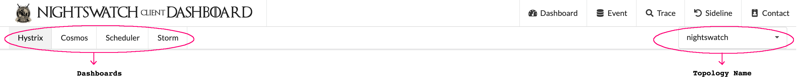
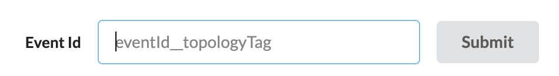
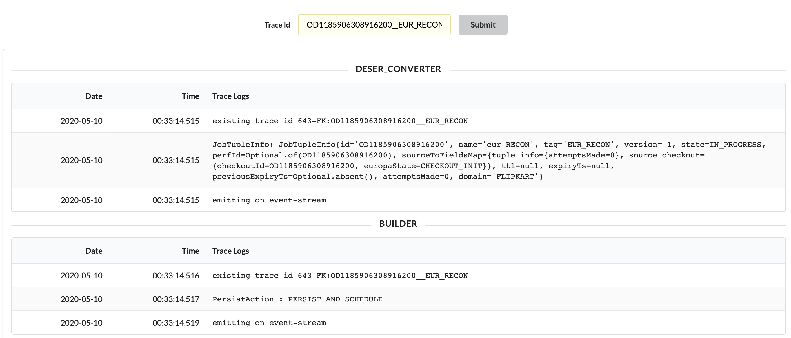
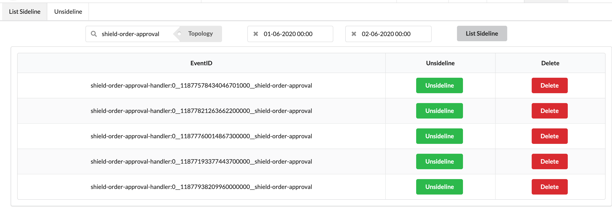
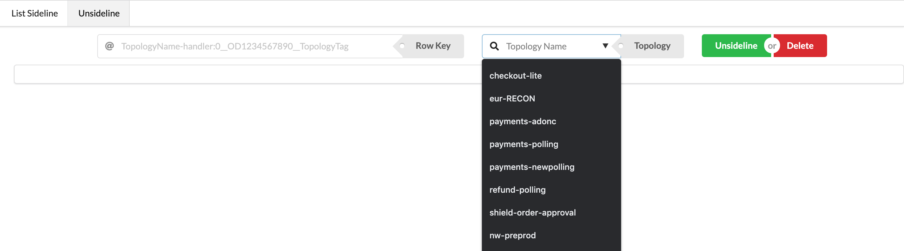

Nightswatch Dashboards¶
Nightswatch Client Dashboard V2.0¶
Non jar Separated Clients (Soon to be deprecated)
Not available in Hyderabad. Please migrate to Jar separated version for Helios support
Topology Cosmos Dashboard: http://10.47.4.24/dashboard/script/nightswatch_dashboard_v2.js
Nightswatch Client Dashboard is a Dashboard UI created for Nightswatch Clients to give them an accumulated view of what is happening in the Toplogy. The UI has several sections:
- Dashboard
- Event
- Trace
- Sideline
- Contact Us

Dashboard¶
Select a Topology from the dropdown on the Top Right Corner of the window and select the corresponding Dashboard from the Tabs in the Top left Corner.
- Hystrix: Give Hystrix metrics for each topology.
- Real time Thread metrics like latencies, throughput etc. for External Calls like Yak, Scheduler, Clients etc.
- Cosmos: Shows Cosmos Grafana Dashboard for that topology. This dashboards mainly consists of:
- Kafka Lag Monitor:
- Pre Scheduler Lag: Lag in reading from Client source Kafka
- Post Scheduler Lag: Lag in reading from Scheduler Sink Kafka
- Bolts Dashboard:
- Number of Bolt Processed per second: For every type of bolt, at what throughput it is executing for that topology?
- Number of Bolt Exceptions per second: For every type of bolt, at what rate it is throwing exceptions for that topology?
- Bolt Processing Latency: For every type of bolt, at what latency at which it is executing for that topology?
- Bolt Transfer Percentage: What percentage of events gets transferred from one bolt to other?
- Scheduler Dashboard:
- Scheduler API Error percentages for ADD, DELETE, UPDATE service calls
- Scheduler API Latencies (90 %ile and 99 %ile) for ADD, DELETE, UPDATE service calls
- Yak Dashboard:
- Yak Error percentages for GET, UPSERT service calls
- Yak Latencies (90 %ile and 99 %ile) for GET, UPSERT service calls
- External Service Call Dashboard:
- External Service Call Error percentages for DO_RECON service calls
- External Service Call Latencies (90 %ile and 99 %ile) for DO_RECON service calls
- Sideline Dashboard:
- Sideline Error percentages for ADD_TO_SIDELINE service calls
- Sideline Latencies (90 %ile and 99 %ile) for ADD_TO_SIDELINE service calls
- Sideline Rate: rate of event going into Sideline
- Kafka Lag Monitor:
- Scheduler: Scheduler Service Dashboard for Respective Topology
- Client Entries QPS and Latencies
- Number of Events evicted and Eviction Lag
- Storm: Storm Dashboard provides a view on the following metrics on a top level view:
- Number of Executors, Workers running for a Topology
- Events emitted, transferred, failed by the topology in last 10 mins, 3 hrs, 1 day, forever etc.
- Events emitted, transferred, failed by Spouts with the latencies
- Events emitted, transferred, failed by Bolts with the latencies
- Worker information like ip address of the supervisor box, id, uptime etc.
- Storm topology Configuration
Bolts Dashboards are only available for Jar Separated Clients
Event Console¶
The Event Console provides with a console to check the Value of any event in the App Database. It has a Text Box where you need to provide the eventId__TopologyTag. To get the TopologyTag, check Topology Config Bucket. You can hover on the TextBox for a second to get more details.

Trace Console¶
The Trace Console provides with a console toget a view of what has happened to the event (Event journey in Nightswatch). It has a Text Box where you need to provide the eventId__TopologyTag. To get the TopologyTag, check Topology Config Bucket. You can hover on the TextBox for a second to get more details.
Trace console provides what has happened to the event at what point of time and in which bolt. Shown a diagram below, where you can see logs separated for each bolt and sorted on Timestamp.

Sideline Console¶
The Sideline Console has 2 sub part in it:
- List Sideline: Select the Topology form the Dropdown and you can optionally select the to and from timestamps from the DateTimePicker and hit the List Sideline Button to get a list of all events sidelined in that time range. You can either unsideline or delete the event from sideline from this view.

- Unsideline: If you already have a Sideline Row Key, enter in the text box, select the topology and hit unsideline or Delete to perform the respective action on the event.

Sideline Console is only available for Jar Separated Clients
Yak Dashboard¶
- Yak dashboard for "yak-nightswatch" rs-group
- Displays Yak metrics like Read / Write TPT, Region Server Metrics, WAL metrics, Disk, Network, IPC details
Nightswatch Yak Dashboard
Nightswatch Zookeeper Dashboard¶
- Zookeeper related metrics like #connections, Data Size, #Alive Nodes, #Followers, #Outstanding Requests, #Nodes and Watchers
Nightswatch Zookeeper Dashboard
Nightswatch System Metrics¶
- Core system metrics like CPU usage, Load, Memory usage, Disk, and Network Metrics.
Nightswatch System Metrics Dashboard
Chennai: http://10.47.4.24/dashboard/script/system_v4.js?app=prod-nightswatch&refresh=10s&orgId=1
Hyderabad: http://10.24.0.243/dashboard/script/system_v4.js?app=prod-nightswatch&refresh=10s&orgId=1